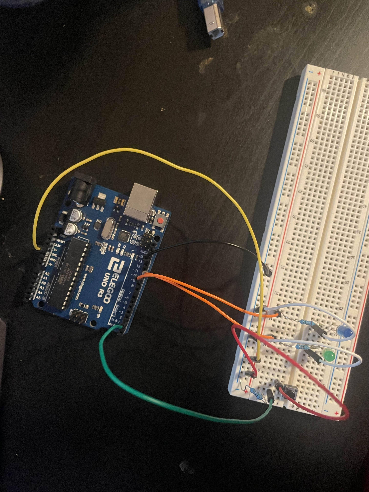
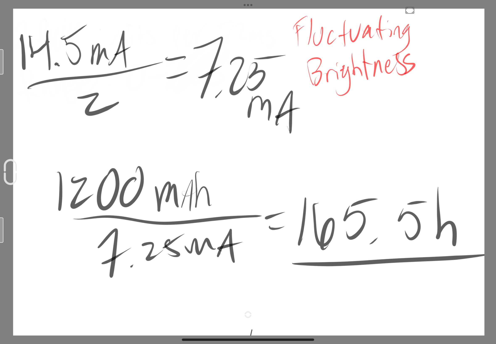
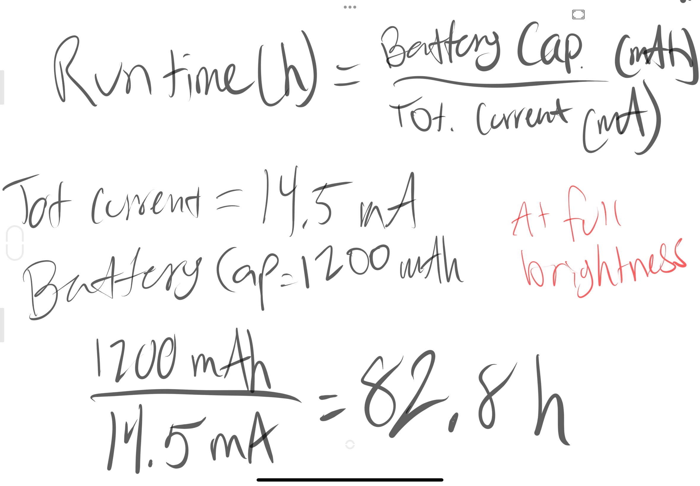

Here is all the documentation for assignment 2!
Here is all the documentation for assignment 2!
// the setup function starts once the arduino is powered or reseted
void setup()
{
// initializing digital pins LED_BUILTIN as an output and push button pin as an input.
pinMode(10, OUTPUT);
pinMode(11, OUTPUT);
pinMode(2,INPUT);
}
// the loops runs forever as long as board is powered.
void loop() {
if(digitalRead(2) == LOW) { // reads the push button state, if its not pressed then only one LED is on
digitalWrite(11, HIGH); // Green LED is constantly ON when button is unpressed
digitalWrite(10, LOW); // Blue LED is constantly OFF when button is unpressed
} else{ // when the button is pressed, Green LED turns off and the Blue LED turns on and fades away cyclically until button is unpressed.
digitalWrite(11, LOW); // Green LED turns off immediately
for(int i = 255; i>=0; i-=2){ // loop to start Blue LED fade down
analogWrite(10,i); // Blue LED turns on at max brightness and gradually declines
delay(22); // delays LED light to see fade
}
for(int i =0; i<=255; i+=2){ // loop to start Blue LED fade up
analogWrite(10,i); //Blue LED turns on at lowest brightness and gradually increases
delay(22); // delays LED light to see fade
}
}
}

This is a top view of the physical circuit.

This is the calculations I did to find the right resistor for the job!
Q1: Draw a chart where the X axis is time and the Y axis is voltage. Draw 3 lines representing the voltage across an LED with analogWrite(led, 64), analogWrite(led, 128), and analogWrite(led,255).

Q2: Given your schematic, circuit, and firmware, assuming the only thing that draws current is your LEDs, how long would your circuit run if powered by a 1200 mAh battery?
Assuming the button is pressed the whole time, the circuit would run for about 165.5 hours.
While the button is not pressed, the circuit would run for about 82.8 hours.